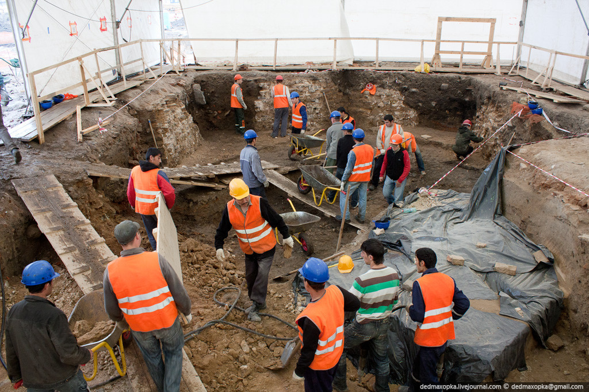

Услуги разнорабочих
 Услуги разнорабочих на стройкуВостребованный вид услуг, позволяющий ускорить процесс выполнения работ путем привлечения большого количества сотрудников. В зависимости от запланированных работ могут привлекаться специалисты для реализации таких задач:
- Дорожные работы.
- Демонтаж и утилизация мусора.
- Погрузочно-разгрузочные работы.
- Копка траншей разной длины и глубины, ям, котлованов.
- Монтаж легкого оборудования, шпаклевка, покраска.
- Расчистка от мусора и растений придомовой зоны.
- Облагораживание и озеленение территории.
- Уборка после ремонта.
- Помощь специалистам.
Могут предоставляться по отдельным направлениям или комплексно — с задействованием на одном объекте сразу нескольких бригад.
Преимущества обращения в «СтройПерсонал»Обращайтесь в нашу компанию, и получите профессиональный штат разнорабочих, а также ряд дополнительных преимуществ:
- Постоянные сотрудники. Мы не проводим замену персонала если в этом не возникает необходимости.
- Гибкий рабочий график. Составим смены удобным для вас образом, включая работы в ночное время.
- Удобный способ оплаты. Оплатить услуги наших сотрудников вы можете наличкой или в безналичной форме, для ИП/ООО с НДС, а также мы предоставляем пакет закрывающих документов по ЭДО.
- Самостоятельность. Сотрудники приезжают на объект самостоятельно, с собственной робой и обедом.
- Круглосуточная связь. Связаться с нами можно в режиме 24/7, независимо от выходных и праздников.
- Замена сотрудника. Если по какой-то причине вас не удовлетворяет сотрудник, мы проведем его замену.
- Система скидок и кэшбэк. Получайте скидки до 10% при оформлении крупного заказа в виде кэшбэка.
- Только граждане РФ. Никаких проблем с УФМС, поскольку все наши сотрудники — граждане РФ и имеют соответствующие документы на руках.
Услуги разнорабочих в Москве от «СтройПерсонал» — гарантия качественного выполнения работ в установленные сроки.
Заказ и оплата - услуг разнорабочихЦена услуг разнорабочих зависит от вида выполняемых работ, а также численности бригады, заказанной для их реализации. Уточнить точную стоимость вы можете при оформлении заказа у менеджера компании. Сделать заказ можно позвонив по указанным номерам или оставив заявку на сайте. Оплата работ производится по факту их выполнения наличным или безналичным способом, включая перевод на банковские карты всех основных банков РФ. Выбор способа оплаты остается за вами.
30.07.2022